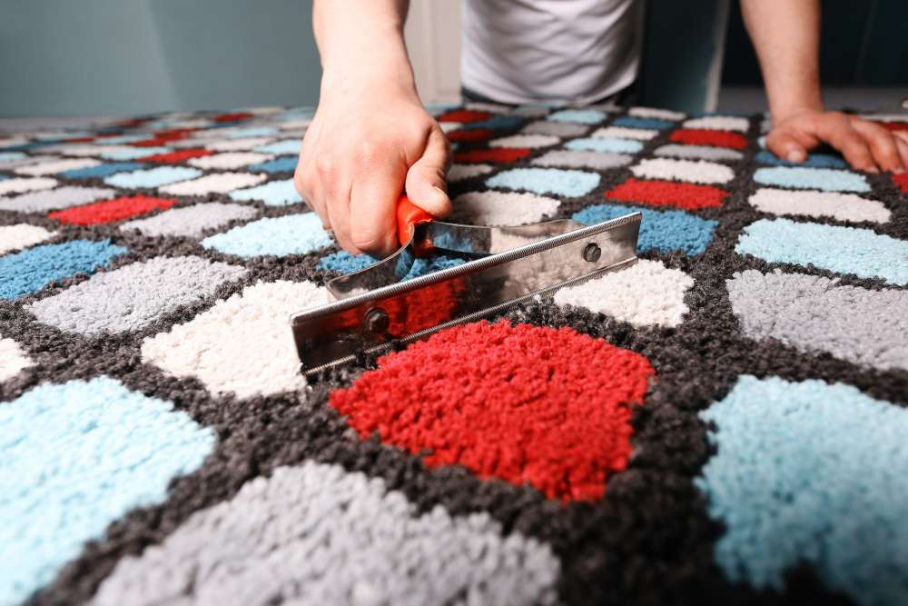

Химчистка ковров
Наши услуги
Одним из ключевых направлений деятельности компании CleenRoom является
предоставление профессиональных услуг по химчистке ковров в Минске.
Часто ковры становятся подвержены накоплению пыли, грязи, пятен и
запахов, и требуют специализированного подхода для их очистки и
восстановления.
Мы предлагаем высококачественную химчистку ковров различных типов и
размеров. Наша команда профессионалов обладает глубоким пониманием
различных материалов, из которых изготовлены ковры, и применяет
подходящие методы и средства для безопасной и эффективной очистки. Мы
используем передовое оборудование и экологически чистые химические
растворы, которые позволяют удалить загрязнения и пятна, в то же время
бережно относясь к волокнам ковра.
Наша команда готова предоставить услуги химчистки ковров как в
офисных, так и в жилых помещениях. Мы гарантируем, что ваши ковры
будут освежены, очищены от загрязнений и пятен, и восстановят свою
первоначальную красоту и чистоту. Мы также уделяем особое внимание
удалению неприятных запахов, чтобы создать свежую и приятную атмосферу
в вашем помещении.
Если вам требуется профессиональная химчистка ковров, наша команда
приедет в удобное для вас время и выполнит работу с высоким качеством
и вниманием к деталям. Мы стремимся предоставить надежный и удобный
сервис, чтобы ваши ковры оставались чистыми, свежими и долговечными.
Какие виды услуг мы оказываем
- Выбивание покрытия: Мы избавляемся от пыли и грязи, выбивая ковровое покрытие специальными устройствами. Это позволяет удалить поверхностные загрязнения и освежить волокна ковра.
- Полоскание водой под высоким давлением: Мы проводим обильное полоскание ковра водой под высоким давлением, чтобы удалить остатки грязи и химических средств.
- Химическая обработка: Мы обрабатываем ковер специальными химическими средствами, которые втираются при помощи роторных щеток. Это позволяет эффективно бороться с пятнами и неприятными запахами.
- Повторное полоскание: Мы повторно ополаскиваем ковер для удаления остатков химии и загрязнений, обеспечивая его безопасность и чистоту.
- Отжим и полоскание: Ковер сворачивается и размещается на специальной центрифуге, где происходит процесс отжима и дополнительного полоскания. Это помогает удалить излишки влаги и обеспечить быстрое высыхание.
- Сушка: Ковер сушится в специальном помещении в течение 5-9 часов. Это позволяет полностью удалить влагу и предотвратить появление плесени или неприятных запахов.
- Осмотр и проверка: Мы тщательно осматриваем ковровое покрытие, проверяя наличие остатков мусора или пятен. Если необходимо, мы проводим дополнительную обработку для достижения максимальных результатов.
- Обработка и доставка: После завершения процесса очистки, мы проводим финальную обработку изделия и доставляем его клиенту в чистом и свежем состоянии. 
Наши специалисты готовы оперативно и профессионально выполнить химчистку ковров в вашем офисе или доме. Не стесняйтесь связаться с нами прямо сейчас - мы всегда готовы приехать и обеспечить чистоту и свежесть ваших ковров!
 +375297762648
+375297762648Наши Клиенты


Химчистка ковров
Наши специалисты имеют обширный опыт работы с различными типами диванов и обивок, включая тканевые, кожаные и другие материалы. Мы готовы эффективно и профессионально выполнить химчистку вашего дивана, независимо от его состояния и типа загрязнений. При проведении ремонтных работ или при длительном использовании дивана на обивке могут появиться следы краски, лака, клея, штукатурки или цемента. Наши специалисты легко справятся с такими загрязнениями и обеспечат их безопасное и эффективное удаление, не повреждая обивку дивана.
Мы также специализируемся на работе с различными типами тканей и кожи, и применяем соответствующие методы и химические средства, чтобы достичь оптимальных результатов при химчистке дивана. Наша команда гарантирует, что ваш диван будет очищен от пятен, грязи и неприятных запахов, и вернется в свежее и привлекательное состояние. Мы стремимся предоставить высококачественный сервис и удовлетворить потребности наших клиентов при химчистке диванов. Наша команда профессионалов примет все необходимые меры для того, чтобы ваш диван выглядел чистым, свежим и восстановленным.
Стоимость услуг по химчистке ковров
Компания CleenRoom предлагает конкурентные цены на услуги химчистки ковров. Мы также предоставляем скидки при заказе большого объема работ или регулярного сотрудничества. При обращении к нам, наш менеджер проведет оценку состояния ковра и обсудит ваши пожелания. Мы учтем размер дивана, его тип , степень загрязнения и другие факторы, чтобы предоставить вам точную стоимость услуги. Мы стремимся предложить прозрачные и адекватные цены, учитывая особенности каждого конкретного заказа.
| Тип уборки | Цена |
|---|---|
| Химчистка ковров | от 7 BYN за BYN/м2 |
При проведении химчистки ковров мы предлагаем следующие этапы работы:
- Оценка состояния ковра и определение типа материала, чтобы выбрать подходящие методы и средства для чистки.
- Предварительное удаление поверхностных загрязнений, пыли и мелких частиц с помощью пылесоса или других специальных инструментов.
- Нанесение специализированного чистящего раствора на ковер и его распределение по поверхности для удаления стойких пятен и загрязнений.
- Использование различных методов вибрационной, шампуньной или паровой чистки, в зависимости от типа ковра и его потребностей.
- Тщательное ополаскивание ковра для удаления остатков чистящих средств и грязи.
- Высушивание ковра с использованием специализированного оборудования или естественного воздушного потока.
- Проверка качества выполненных работ, чтобы убедиться, что ковер полностью чист и без пятен.
Почему выбирают CleenRoom?
- Мы оперативно предоставляем услуги в любое удобное время.
- Работы выполняет слаженная команда опытных сотрудников, что гарантирует идеальный результат и сохранность целостности стекол и фасадов.
- Наши клинеры используют современный инвентарь и эффективные чистящие средства, соответствующие экологическим нормативам и являющиеся безопасными для здоровья людей.
- Мы ответственно подходим к срокам сдачи заказов и никогда не нарушаем рабочий процесс в компании клиента.
- Стоимость проведения химчистки ковров в CleenRoom не бьет по бюджету заказчика.
Как мы работаем
Вы оформляете свою уборку на сайте
Наши клинеры приезжают и начинают работу
Вы оплачиваете уборку